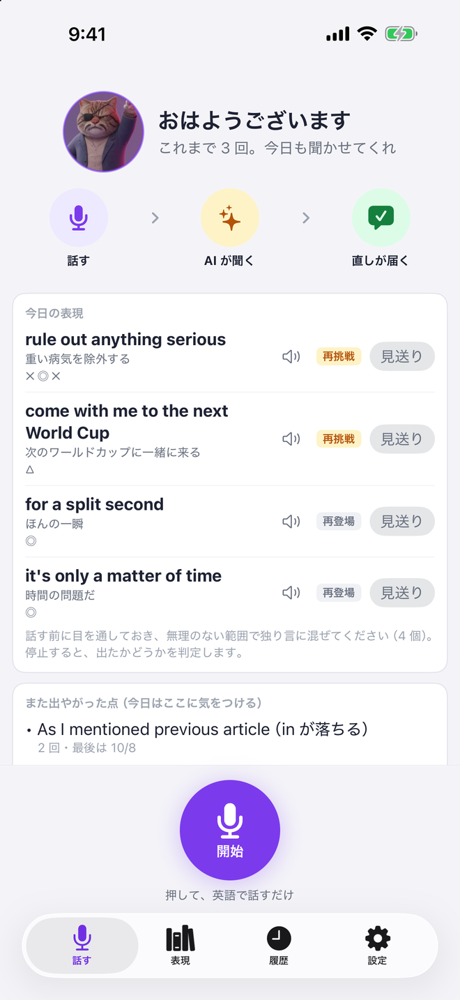
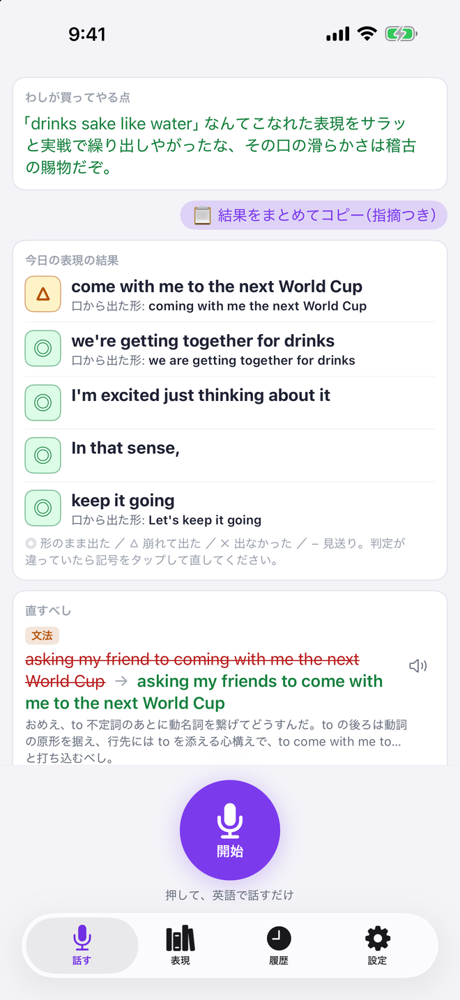
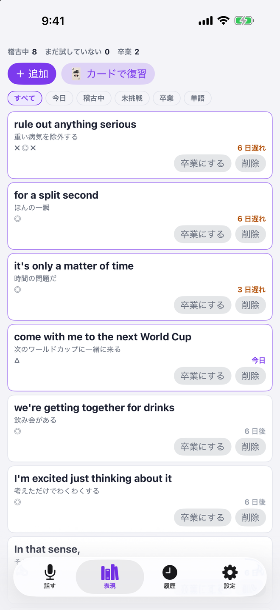

開いて、丸いボタンを押して、英語で話すだけです。「今日の表現」に入れておいた言い回しが毎日いくつか出るので、独り言の中に混ぜて使います。

止めると、AI コーチが音声を聞いて、よかった点・今日の表現を言えたかの判定・直すべき点を返します。直しは「言った形 → 自然な形」と、なぜそうなるかの一言つきです。

覚えたい表現は表現集に入れておきます。言えた表現は間隔をあけてまた出て、3 回言えたら卒業です。添削の「直すべし」からも 1 タップで入れられます。
英語で独り言を話して、止めるだけ。AI コーチが音声を聞いて、書き起こしと添削を返す iPhone アプリです。同じ名前の Chrome 拡張機能をもとに、自分が 30 日間毎日使いながら作り直しました。API キーの用意は要りません。
できること
- 録音した音声を AI が聞いて、書き起こしと添削を一度に返します。音声から聞き取るので、音声認識の聞き違いで「言っていないこと」を直される事故が減ります
- 直しは「言った形 → 自然な形」と、なぜそうなるかの一言つき。よかった点も一言。ぶっきらぼうなコーチの口調です
- 「今日の表現」：覚えたい表現を入れておくと毎日いくつか出て、独り言の中で言えたかを判定します。言えた表現は間隔をあけてまた出て、3 回で卒業
- 直された形や今日の表現は、端末の声で読み上げて真似できます
- API キーは不要。1 日 3 回まで無料で使えます。自分の Gemini のキーを登録すれば、回数の制限なく、開発者のサーバーを介さずに使えます
- 履歴は iPhone の中。記録の書き出しと読み込みができ、Chrome 拡張機能版と同じ形式です
※ 添削に使う音声は、開発者の中継サーバーを通して Google の Gemini に送られ、添削だけが返ります。サーバーに音声は保存しません。
iPhone アプリApp StoreAPI キー不要無料広告なし